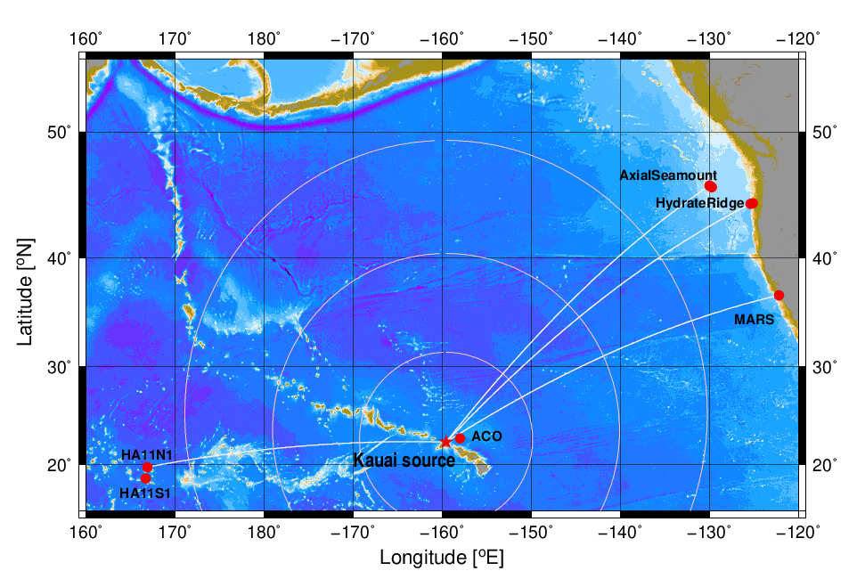
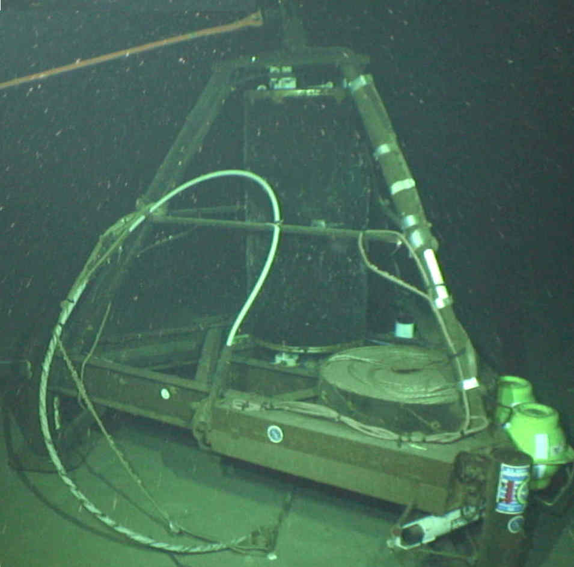

Sounding the oceans with .... sound!
Sounding the oceans with .... sound!
|

Marasondo is a project to use long-range underwater sound to measure the effect of climate change on the ocean's temperature, to guide far-ranging exploratory robotic vehicles back home, and to relay greetings to all our friends in the deep, dark, briny depths. |
|
Marasondo is an Esperanto word meaning ocean signal. The oceans belong to no one nation or race, and, likewise, Esperanto is a universal language that belongs to no one nation or race. Marasondo consists of multiple underwater nodes around the world, bringing the world together. |
|

Catch up the latest news regarding the Kauai System!!! |